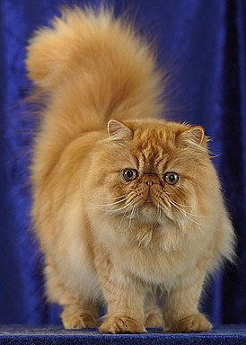
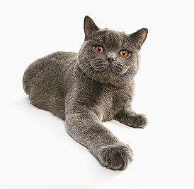
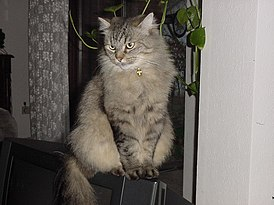
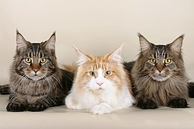

Кошки: таинственные и прекрасные создания
Кошки — удивительные существа, которые сопровождают человечество уже на протяжении тысяч лет. Их таинственная независимость и элегантность не перестают вдохновлять нас.
Персидские кошки — одни из самых известных пород благодаря своей длинной, густой шерсти и утонченной внешности. Они обладают спокойным характером и часто являются отличными компаньонами в домашней обстановке.
Британские короткошерстные кошки — это сильные и компактные животные с плотной мускулатурой. Их короткая, густая шерсть и широкая морда делают их неповторимыми. Они известны своей спокойной и сдержанной натурой.
Сибирские кошки — это крупные и мощные животные с пышной двойной шерстью, которая защищает их от холода. Они активные и игривые, но в то же время преданы и спокойны в общении с людьми.
Мейн-куны — самые большие домашние кошки, которые заслуживают своего прозвища «дружелюбные гиганты». Они обладают дружелюбным и игривым характером, а их густая шерсть и великолепный хвост делают их впечатляющими.